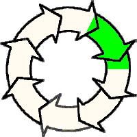

Lessons in Theosophy

Lesson 18,
The Beginning of the Universe
Here is a synopsis of the beginning of the universe, up to the point of the appearance of
The Planes of Existence. (This chapter is preparation for a more detailed study,
of the beginning of the universe in the Stanzas of Dzyan in the next chapter.)
-- The Absolute --
The story begins with the Absolute, described in lesson 4.
As was stated in that lesson, the Absolute is unmanifest, does not manifest, and does not go through any cycle
of manifesting / unmanifesting. In contrast, the Universe does
follow a definite cycle of manifesting and unmanifesting.
“Everything in the Universe progresses steadily in the Great Cycle, while incessantly
going up and down in the smaller cycles. Nature is never stationary during manvantara, as
it is ever becoming, not simply being ....”
(H.P. Blavatsky, The Secret Doctrine, vol. I p. 257)
It is the story of the beginning of the most recent cycle that is the story of the beginning of our Universe.
-- The Universe --
Let’s take a moment and consider the word “Universe”. The Universe is much more than the stars
and empty space we see when we look up at the night sky. The stars we see are physical manifestations
of a truer Reality. This Reality contains several Planes of Existence (as
explained in lesson 7), of which the Physical Plane
of Existence is only one Plane.
This story of the beginning of the Universe refers to all aspects and Planes
of the Universe, not just the physical.
-- A Universal Manvantara “Maha-Manvantara”--
Theosophy teaches that universes appear in periods of activity called Universal Manvantaras.
These Universal Manvantaras are followed by periods of rest, or dissolution, call Universal Pralayas.
Our Universe appeared when the last Universal Pralaya ended, and our present Universal Manvantara began.
The beginning of a Universal Manvantara has been compared to the “Big Bang” theory of modern day science,
although this is not acknowledged in Theosophical literature, The comparison is easy to make.
If modern science says that there was a Big Bang, there may have been other Big Bangs before this one,
which may fit the idea of multiple universes appearing sequentially, due to sequential Universal Manvantaras.
In Theosophy, each universe appears and disappears in Universal Manvantara after Universal Manvantara.
The beginning of the Universe, then, is the story of the Universe being in one of its inactive phases
called a “Universal Pralaya.” (The word “Universal” is used because it pertains to the entire Universe.
There are also planetary pralayas, solar-system pralayas, galactic pralayas, etc.) The Universe then makes
its transition into an active phase, a Universal Manvantara.
The phrase “the beginning of the Universe” is used instead of “the creation
of the Universe”
because is not the initial creation of anything. It is only the
re-awakening of something inactive, the
re-awakening of something that was active in a previous cycle.
We will consider the beginning of our present Universal Manvantara in due time. However, our story begins
with the final stage of the previous Universal Pralaya.
-- The Previous Universal Pralaya Ends --
During the last Universal Pralaya, only the Absolute existed. Everything else, all aspects of
the Universe, had entered into a period
of inactivity, of complete rest. It is as if all facets of the Universe (the
Physical Plane, the Astral Plane, etc.) had disappeared. (The terminology used is
they had “become undifferentiated,”)
One aspect of reality, Spirit, is non-existent during a Universal Pralaya:
“During the period of Universal Pralaya, Cosmic Ideation [Spirit] is nonexistent....”
(H.P. Blavatsky, The Secret Doctrine, vol. I p. 328)
Matter is non-existent:
“... the variously
differentiated states of Cosmic Substance [Matter] [have] resolved back again into the primary state of
abstract potential objectivity.”
(H.P. Blavatsky, The Secret Doctrine, vol. I p. 328)
-- Our Present Universal Manvantara Begins --
The manifestation of the new Universe begins. The first event happens.
It has been described as:
“...the One Eternal drops its reflection into the region of Manifestation....”
(H.P. Blavatsky, The Secret Doctrine, vol. I p. 231)
The process begins with the appearance of Spirit-Matter:
“... coeval and co-eternal SPIRIT-MATTER [makes] its appearance in the phenomenal world,
before its first differentiation. When ‘the one becomes two.’” (H.P. Blavatsky, The Secret Doctrine, vol. I p. 326)
A single entity called Spirit-Matter is the first thing to appear. This Spirit-Matter then
differentiates into two entities, Spirit and Matter, as stated in the quotation above.
-- Veil Upon Veil --
The cloaking and veiling of reality (The Absolute) is a key concept in Theosophy. Spirit allows itself to be
cloaked, in veil upon veil of material, for the purpose of manifesting.
This cloaking causes Spirit to be limited.
[The Absolute takes on] “... the limitations of
matter ..., in the veiling of the Unconditioned in conditions, in the binding of the
Free within bonds. The first thought that we have, as we watch the evolving of a universe, is that
this manifestation of life is only possible by its limitations....”
(Annie Besant, The Laws Of Higher Life,
p. 48).
The Absolute, then, voluntarily imposes confinement on a part of itself, a limitation, called the Universe.
“Coming forth from the depths of the One Existence [the Absolute], from the One beyond all thought and all speech,
a Logos, by imposing on Himself a limit, circumscribing voluntarily the range of His own Being (emphasis added),
... and tracing the limiting sphere of His activity thus outlines the area
of His universe. Within that sphere the universe is born, is evolved,
and dies ; it lives, it moves...”
(Annie Besant, The Laws Of Higher Life,
p. 42).
The Universe and physical matter, then, are finite limitations on a part of the Infinite:
“The phenomenal spirit and matter of any universe are finite in their extent and transitory in their
duration, but the roots of spirit and matter are eternal. The root of matter ...
has been said ... to be ... a veil thrown over the One existence....
It is this ‘veil‘ which the Logos assumes for the purpose of manifestation, using it for the self-imposed
limit which makes activity possible. From this He elaborates the matter of His universe....”
(Annie Besant, The Laws Of Higher Life,
p. 42).
Pieces of the Absolute become “veiled in matter”.
“... by the
action of the Third Logos a ... field [the universe]
has been provided for the development of Units of
Consciousness [Monads], and that a Unit of Consciousness is a fragment, a portion of the Universal
Consciousness, thought [moves] into separation as an individual entity veiled in matter, a Unit
of the substance of the First Logos, to be sent forth on
the second [Anupadaka] plane as a separate Being.”
(Annie Besant, A Study in Consciousness,
p. 34).
The Monad, too, allows part of itself to be veiled, for the purpose of have experiences.
[The Monad evolves his consciousness] “ ...
by taking from each plane some of its matter, veiling himself in this matter and
forming it into a sheath by which he can come into contact with that plane, gradually
organising this sheath of matter into a body capable of functioning on its own plane
as an expression of himself, receiving vibrations from the plane and transmitting them
to him, receiving vibrations from him and transmitting them to the plane. As he veils
himself in the matter of each successive plane he shuts away some of his consciousness,
that of it which is too subtle for receiving or setting up vibrations in the matter of
that plane. He has within him seven typical vibratory powers - each capable of producing
an indefinite number of sub-vibrations of its own type — and these are shut off one by
one as he endues veil after veil of grosser matter. The powers in consciousness of
expressing itself in certain typical ways — using the word power in the mathematical
sense, consciousness ‘to the third’,
consciousness ‘to the fourth‘, etc.— are seen in
matter as what we call dimensions. The physical power of consciousness has its
expression in ‘three-dimensional matter‘, while the astral, mental, and other powers of
con�sciousness need for their expression other dimensions of matter.”
(Annie Besant, A Study in Consciousness,
paragraph 58 online or
pages 41-42 hardcopy).
The Monad provides a germ (the Atma-Buddhi-Manas), which is wrapped tighter and tighter in
the veil of matter. This germ is now practically powerless, but, in time, it will become
a fully-actualized, fully powerful aspect of the Infinite.
“ ... Atma-Buddi-Manas, the Jivatma, is described as a seed, a germ, of divine Life,
containing the potentialities of its own heavenly Father, its Monad, to be unfolded into powers
in the course of evolution. This is the ‘manhood’ of the divine Son of the First Logos,
animated by the ‘Godhead’, the Monad — a mystery truly, but one which is repeated in many forms around us.
“And now the nature, which was free in
the subtle matter of his own plane, becomes bound by the denser matter, and his powers of
consciousness cannot as yet function in this blinding veil. He is therein as a mere germ,
an embryo, powerless, senseless, helpless, while the Monad on his own plane is strong,
conscious, capable, so far as his internal life is concerned; the one is the Monad in
Eternity, the other is the Monad in time and space; the content of the Monad eternal
is to become the extent of the Monad temporal and spatial. This at present embryonic
life will evolve into a complex being, the expression of the Monad on each plane of the
universe. All-powerful internally on his own subtle plane, he is at first powerless,
fettered, helpless, when enwrapped externally in denser matter, unable to receive through
it, or to give out through it, vibrations. But he will gradually master the matter that
at first enslaves him; slowly, surely, he will mould it for Self-expression; he is aided
and watched over by the all — sustaining and preserving Second Logos, until he can live
in it fully as he lives above, and become in his turn a creative Logos and bring forth
out of himself a universe. The power of creating a universe is only gained, according
to THE WISDOM, by involving within the Self all that is later to be put forth. A Logos
does not create out of nothing, but evolves all from Himself; and from the experiences
we are now passing through, we are gathering the materials out of which we may build
a system in the future.”
(Annie Besant, A Study in Consciousness, page 64
online or
hardcopy).
It is this veiling which allows the seven Planes of Existence to appear.
“It is this ‘veil’ which the Logos assumes for the purpose of manifestation, using it for
the self-imposed limit which makes activity possible. From this He elaborates the matter
of His universe, being Himself its informing, guiding, and controlling life. (Hence He is
called ‘The Lord of Maya’ in some Eastern Scriptures, Maya,
or illusion, being the principle
of form; form is regarded as illusory, from its transitory nature and perpetual transformations,
the life which expresses itself under the veil of form being the reality).
“digging holes in space”
“Of what occurs on the two higher planes of the universe, the seventh and sixth, we can
form but the haziest conception. The energy of the Logos as whirling motion of inconceivable
rapidity ‘digs holes in space’ in this
root matter, and this vortex of life encased in a
film of the root of matter is the primary atom; these and their aggregations, spread throughout
the universe, form all the subdivisions of spirit-matter of the highest or seventh plane.
The sixth plane is formed by some of the countless myriads of these primary atoms,
setting up a vortex in the coarsest aggregations of their own plane, and this primary atom
en-walled with spiral strands of the coarsest combinations of the seventh plane becomes the
finest unit of spirit-matter, or atom of the sixth plane. These sixth plane atoms and their
endless combinations form the subdivisions of the spirit-matter of the sixth plane.”
(Annie Besant, The Ancient Wisdom,
pages 42-43 online or
hardcopy).
It is this very veiling of the Unlimitable that allows spiritual evolution to occur:
“This involution of the life of the Logos as the ensouling force in every particle, and its successive
enwrapping in the spirit-matter of every plane, so that the materials of each plane have within
them in a hidden, or latent condition, all the form and force possibilities of all the planes above
them as well as those of their own – these two facts make evolution certain and give to the very
lowest particle the hidden potentialities which will render it fit – as they become active powers –
to enter into the forms of the highest beings. In fact, evolution may be summed up in a phrase :
it is latent potentialities becoming active powers.”
(Annie Besant, The Laws Of Higher Life,
p. 44 online or
hardcopy).
Our task in life, then, is to remove all of our veils, and see what we truly are.
“...man is regarded as
Atma, taking on itself five different sheaths — an exceedingly luminous classification,
because in each case you have this conception of the sheath that veils the true Self; so
that the real process ... will be to get rid of sheath after sheath until the Self
stands alone once more as it did at the beginning.”
(Besant, Annie, The Building of the Cosmos,
paragraph 49 online
One final question needs to be asked.
“The life coming forth from the Supreme puts on veil after veil of Maya, ... to evolve
all the perfections that lie latent within it.
“Now the first question is: Does not this life [from the Absolute] already contain
within itself everything already developed, every manifested power, every possibility realized
as actuality? The answer to that question, spoken over and over again, in symbols, allegories,
and distinct words, is ‘No’. It contains everything in potency, but nothing at first in manifestation.
It contains everything in germ, but nothing at first as developed organism..”
(Annie Besant, Dharma, page 22
online
or online)
~~
In conclusion, a part of the the Absolute is willingly confined within matter, in order to gain
experiences and lessons that could be learned in no other way.
-- "Root-Matter" --
The word "root-matter" often appears in Theosophical literature,
so it is explained here. Root-matter is the basic "matter" of the Universe. It is the "stuff" from which
physical atoms are eventually built. Root-matter is not described in the literature,
so its characteristics are unknown. It is just the basic "matter" of the physical and
non-physical Universe.
It is important not to confuse root-matter with physical atoms. Root-matter is the substance from which
physical atoms are made (It is the "root" of physical matter). The process,
which was described above, is this: holes are "dug" into root-matter,
creating the first Adi-level atoms.
Adi-level atoms are then combined, to create Anupadaka-level atoms, etc. Several levels below,
astral atoms are combined, to create physical atoms.
A few terms need to be reviewed:
- root-matter
- undifferentiated cosmic root-matter
- Mulaprakriti
These three terms mean the same thing, and are interchangeable.
-- The Theosophical Concept of Logos --
It is now time to take a look at the Theosophical concept called Logos. The word Logos appears often in
Theosophical literature, and is a key part of Theosophical cosmology.
The word Logos:
“The term comes from the Greek, derived
from the verbal root lege in, meaning to
speak; thus logos originally signified the
"word" by which the inward thought is expressed;
the inward thought itself. Thus the
philosophical concept in associating the term
with the coming into being of a cosmos, or
a system, is this: there must be a reason
for the coming into being of a system,
hence divine thought is instrumental in the
process. With the formulation of the idea
there must also be a means of expressing
it, that is, carrying out of the idea. The
same thing is present in the utterance of a
word. Before the word may be produced as
sound, there must be the ideation or thought
of it; there must also be the desire of sufficient
potency to produce "the sound of it.
When the idea is transmitted by means of
the sound, the resultant effect is the word — the Logos.” (Transactions
of the Blavatsy Lodge vol. II p. 9)
First, we need to list terms. Theosophy talks of three Logoi (Logoi is the plural of Logos),
called:
- First Logos
- Second Logos
- Third Logos
There is only one Logos, yet there are three separate aspects of the one Logos.
[The one Logos] “... works in three fundamental
modes, which are symbolized in the great religions as those of the Creator, the Preserver,
and the Destroyer [in Hinduism]; or the Father, the Son, and
the Holy Ghost [in Christianity]. In modern Theosophical.
nomenclature, this triple activity is described
as that of the First Logos (Father), the Second
Logos (Son), and the Third Logos (Holy
Ghost). The First Logos, the Second Logos
and the Third Logos are but three Aspects of
the one Solar Logos; while three in manifestation, [The Logos] is yet ever the one indivisible ...”
(C. Jinarajadasa, The First Principles of Theosophy, page 197-198,
online or
hardcopy)
Sometimes the Logos is referred to as being one, and sometimes the Logos referred to as
being three. Both terminologies are correct.
“... the
Logos of our system reveals Himself in three-fold aspect. ... in every great religion
the Trimurti, or the Trinity, is the representation of the manifested God; and you know also, at
least the more thoughtful and philosophic among you know, that the Three are but a three-fold
manifestation of the One; the three aspects of the one — unmanifested Existence,
that can be known only as it is manifested in the Universe.”
(Annie Besant, The Path of Discipleship,
paragraph 95 online or
page 126 hardcopy)
- The Three Logoi in The World’s Major Religions -
It needs to be emphasized that the concept of a triple-aspect diety is common in
some of the world’s major religions, for example, Hinduism and Christianity, as described in the above quotation.
As in the quotation above, the three Logoi correspond to the Father, Son, and Holy Spirit of the Christian
Bible. As such, the “Father” of the Christian Trinity corresponds to the First Logos.
We will now look at characteristics of each Logos.
- The First Logos -
The First Logos is the first “emanation” of the Absolute, described as a ray being emitted from the Absolute.
“... the One unknown [the Absolute], without
beginning or end, identical with Parabrahm [Hindu] and Ain-Soph [Jewish], emits
a bright ray from its darkness.
This is the Logos (the first), or Vajradhara, the Supreme
Buddha (also called Dorjechang {Tibetan}).”
(H.P. Blavatsky, The Secret Doctrine, Vol. 1, page 571,
online or
hardcopy)
The First Logos is the God of the Christian Bible, the Adi-Buddha of Buddhism, and Vishnu of
Hinduism (SD I 381 note).
- The Second Logos -
It is time to look at the relationship of the First Logos to the Second Logos.
We continue with the sentence in the Secrect Doctrine as quoted above.
[The Absolute] “, ... without
beginning or end, identical with Parabrahm and Ain-Soph, emits
a bright ray from its darkness.
This is the Logos (the first), or Vajradhara, the Supreme
Buddha (also called Dorjechang).”
(H.P. Blavatsky, The Secret Doctrine, Vol. 1, page 571),
online or
hardcopy)
It is the Second Logos which manifests. We continue with the sentence in the Secrect Doctrine as quoted above.
“As the Lord
of all Mysteries he cannot manifest, but sends into the world
of manifestation his heart — the ‘diamond heart,’ Vajrasattva
(Dorjesempa). This is the second logos of
creation.”
(H.P. Blavatsky, The Secret Doctrine, Vol. 1, page 571),
online or
hardcopy)
From the Second Logos emanate the seven Dyani Chohan (The “gods” of
Genesis which created Adam and Eve in Genesis 1.26).
- The Third Logos -
It is important to note that H.P. Blavatsky often calls
the Third Logos by the name Brahmâ (as opposed to Brahma, unaccented a, the First Logos)
in her writings.
“Brahma (neuter), the unmanifested,
is that Universe in abscondito, and Brahmâ, the manifested,
is the Logos, made male-female in the symbolical orthodox dogmas.”
(H.P. Blavatsky, The Secret Doctrine, Vol. 1, page 9,
online or
hardcopy)
“... Hindus say that the Universe is Brahma and Brahm�, for Brahma is in every atom
of the universe, the six principles in Nature being all the outcome — the variously differentiated
aspects — of the SEVENTH and ONE, the only reality in the Universe whether Cosmical or micro-cosmical;
and also why the permutations (psychic, spiritual and physical), on the plane of manifestation and form,
of the sixth (Brahm� the vehicle of Brahma) are viewed by metaphysical antiphrasis as illusive and Mayavic.”
(H.P. Blavatsky, The Secret Doctrine, Vol. 1, pages 17-18,
online or
hardcopy)
(As a side note, note also that H.P.B. often refers to the Absolute as Parabrahm in the Secret Doctrine.)
- The Interaction of the Three Logoi -
It is the interaction of the three Logoi which cause the universe (matter) to appear, spirit to appear,
and cause spirit to travel along a path of ever-increasing consciousness, through the
Human level, and on to higher levels. Let's look at the process.
The Third Logos cause the universe (matter) to appear.
“Each action in
the making of [atoms] is due
to the focussing of the consciousness of the
Third Logos to that particular purpose.... Our physical atom is not ‘matter’; it is
in reality myriads of points of the consciousness
of the Third Cosmic Logos, held by the Solar
Logos in a particular formation to do a specific
work — that of building the physical plane.”
(C. Jinarajadasa, The First Principles of Theosophy, page 205-206,
online or
hardcopy)
“The work of the Third Logos, then, builds the seven great planes, with their sub-planes, of the solar system. That building is not complete, and it is still proceeding apace. He is the ensouling Force in the Matter of all the planes; electricity is one expression of His force through the matter of the physical plane; another expression, which is totally distinct, is Kundalini, the mysterious "serpent fire" which
operates in all higher organisms.”
(C. Jinarajadasa, The First Principles of Theosophy, page 208,
online or
hardcopy)
Next is the work of the Second Logos. The Second Logos is primarily involved with the
appearance of animal, vegetable (and mineral) life.
[The work of the Second Logos] “... is essentially of an order best described as
Life-Form; with this
energy He ensouls the matter of the seven planes, and enables it to build forms which
have that mysterious quality which we call “life”. This life builds the matter of the
planes into varying forms, and, each form persists only so long as the life of the
Second Logos holds the matter in that form.
“Now for the first time appear the phenomena of birth, growth, decay and death. A form is born because the Life of the Second Logos has a work of evolution to do through that form; it grows while that work is progressing to its culmination; it shows signs of decay because the Second Logos slowly withdraws the life from the form, since the life has evolved all it can through that form; it dies when finally the "Second Logos withdraws all of the life, in order to send it back once again to build a newer and better form, which can give the evolving life the new experiences necessary for its further growth and self-revelation. On the physical plane, the expression of the force of the
second Logos is Prana, Vitality. .”
(C. Jinarajadasa, The First Principles of Theosophy, page 208,
online or
hardcopy)
“It is this ensouling life of the Second Logos which gives to mental and astral matter their peculiarly living quality, so that the faintest vibration caused in the mental world by a thought, or in the astral world by desire, makes the mental and astral matter swiftly generate shapes and forms, and causes it to
crystallize into ‘thought-forms’.”
(C. Jinarajadasa, The First Principles of Theosophy, page 211,
online or
hardcopy)
The Second Logos ensouls plants and animals.
“The life of the Second Logos, after its lowest descent into matter as the mineral kingdom, now begins ...
[the manifestations of the vegetable and animal kingdoms].”
(C. Jinarajadasa, The First Principles of Theosophy, page 212,
online or
hardcopy)
The First Logos causes “souls”, that which is called “humanity”, to appear.
[The First Logos] “... sends a Fragment of Himself, a ‘Monad’,
to make an Individuality in a Causal Body. A Soul of Man,
made ‘in the image of his Maker’, then begins his evolution, which is to discover the Divinity in himself, in his fellowmen, and in all the life of nature which surrounds him. On the physical plane the expression of the force of the First Logos is the Immortal Soul in
a mortal body.”
(C. Jinarajadasa, The First Principles of Theosophy, page 213,
online or
hardcopy)
It is the interaction of the three Logoi (the three aspects of the one Logos)
that cause spirit, matter, humanity, and those beings that are “beyond
human” to appear.
-- The Logos is one? The Logos is Three? --
Christians have been debating for centuries over the nature of God. Is God three entities —
the Father, the Son, and the Holy Spirit? Or is God a single entity? Theosophists face the
same questions.
“As He shows Himself to us in His work the Solar Logos is undoubtedly triple — three and yet one, a religion has long ago told us.”
(Charles Leadbeater, Man Visible and Invisible, paragraph 45 online or
hardcopy)
This chart has been adapted from a chart found in the above-cited
book Man Visible and Invisible.
|
Let’s follow along the explanation, using part of the above chart:
|
The Logos manifests in three aspects in the Adi Plane. The three aspects are called the First,
Second, and Third Logoi (Logoi is the plural of Logos). The First Logos does not manifest below the Adi Plane,
but the Second and Third Logoi do. The Second Logos does not manifest below the Anupadaka Plane,
but the Third Logos does. This explains the lines extending down from the Adi Plane in the chart.
“It will be seen that on the seventh or highest plane of our system the triple manifestation
of our Logos is imaged by three circles, representing His three aspects. Each of these aspects appears
to have its own quality and power. In the First Aspect He does not manifest Himself on any plane below
the highest, but in the Second He descends to the sixth plane, arid draws round Himself a garment of
its matter, thus making a quite separate and lower expression of Him. In the Third Aspect He descends
to the upper potion of the fifth plane, and draws round Himself matter of that level, thus making a
third manifestation. It will be observed that these three manifestations on their respective planes are
entirely distinct one from the other, and yet we have only to follow up the dotted lines to see that
these separate persons are nevertheless in truth but aspects of the one. Quite separate, when regarded
as persons, each on his own plane — quite unconnected diagonally, as it were; yet each having his
perpendicular connection with himself at the level where these three are one.
“Thus we see a very real meaning in the insistence of the Church ‘that we worship one God in
Trinity, and Trinity in Unity, neither confounding the persons nor dividing the substance’ —
that is to say, never confusing in our minds the work and functions of the three separate manifestations,
each on his own plane, yet never for a moment forgetting the Eternal Unity of the ‘substance’,
that which lies behind all alike on the highest plane.”
(Charles Leadbeater, Man Visible and Invisible, paragraphs
46-47 online or
hardcopy)
Next is an interesting piece of history regarding the interpretation of the Triple Logos.
“The greatest schism which has ever occurred in the Christian Church was
that between the Eastern and Western branches, the Greek Church and the Roman.
The doctrinal reason alleged for it was the supposed corruption of the truth, by
the introduction into the Creed of the word filioque at the Council of
Toledo in the year 589.
“The question at issue was whether the Holy Ghost proceeded from the Father alone, or from the Father and the Son. Our diagram enables us to see what was the point at issue; and furthermore, it shows us, curiously enough, that both parties were right, and that if they had only clearly understood the matter there need have been no schism at all.
“The Latin Church held, quite reasonably, that there could be no manifestation on the fifth plane of a Force which admittedly came from the seventh, without a passage through the intermediate sixth, so they declared that He proceeded from the Father and the Son. The Greek Church, on the other hand, insisted absolutely on the distinctness of the Three Manifestations, and quite rightly protested against any theory of a procession from the First Manifestation through the Second such as would be typified in our diagram if we drew a diagonal line through the First, Second, and Third.
The dotted line on the right of [the above plate], showing how the Third Aspect descends through the planes and finally mani�fests on the Fifth, is of course the key to the true line of procession, and the absolute harmony of the two conflicting ideas.”
(Charles Leadbeater, Man Visible and Invisible, paragraphs
46-47 online or
hardcopy)
The phrase, “Man is made in God’s image” (a phrase common in orthodox religion), is now explained.
|
“The wonderful way in which man is made in the image of God may be seen by comparing the triad of the human soul with the Trinity in manifestation above it. So astonishingly material have been the orthodox conceptions, that this text has literally been interpreted as referring to the physical body of man, and made to mean that God created man’s body in a shape which He foresaw as that which Christ would choose to assume when He came on earth.
“A glance at [the plate above] shows us at once the true mean�ing of those words. Not the physical body of man, but the constitution of his soul, reproduces with marvellous exactitude the method of Divine manifestation. Just as three aspects of the Divine are seen on the seventh plane, so the Divine Spark of the spirit in man is seen to be triple in its appearance on the fifth plane. In both cases the Second Aspect is able to descend one plane lower, and to clothe itself in the matter of that plane; in both cases the Third Aspect is able to descend two planes and repeat the process. So in both cases there is a Trinity in Unity, separate in its manifesta�tions, yet one in the reality behind.”
(Charles Leadbeater, Man Visible and Invisible, paragraphs
55-56 online or
hardcopy)
The quotation continues, explaining the meanings of well-known Christian terms.
“It is from this Third Aspect that the first movement towards the formation of the system comes. Previous to this movement we have in existence nothing but the atomic state of matter in each of the planes of nature, none of the aggregations or combinations which make up the lower sub-planes of each having yet been formed. But into this sea of virgin matter (the true Virgin Maria) pours down the Holy Spirit, the Lifegiver, as He is called in the Nicene Creed; and by the action of His glorious vitality the units of matter are awakened to new powers and possibilities of attraction and repulsion, and thus the lower subdivisions of each plane come into existence. It will be seen that this is symbolized in the diagram by a line descending from the lowest circle straight through all the planes, growing broader and darker as it comes, to show how the Divine Spirit becomes more and more veiled in matter as it descends, until many are quite unable to recognize it as divine at all. Yet the living force is nevertheless there, even when it is most strictly confined in the lowest of its forms.
“Into this matter thus vivified, the second great out-pouring of the Divine Life descends. Thus the Second Person of the Trinity takes form not
of the ‘virgin’ or unproductive matter alone, but of the matter which
is already instinct and pulsating with the life of the Third Person, so that
both the life and the matter surround Him as a vesture, and thus in very
truth He is ‘incarnate of the Holy Ghost and the Virgin Mary’, which is the
true rendering of a prominent passage in the Christian creed. (See The Christian Creed.)”
(Charles Leadbeater, Man Visible and Invisible, paragraphs
55-56 online or
hardcopy)
The above quotation continues in the book (paragraphs 57-66), explaining that the physical universe is a manifestation of the
Third Logos, plant, animal, (and mineral) life is a manifestation of the Second Logos,
and human life (and that which is beyond human) is a manifestation of the First Logos.
~~~
The First Logos appears, followed by the Second Logos, followed by the Third Logos. These, then
are the Three Logoi (logoi is the plural of logos). These three Logoi make up the Triple-Logos.
The Triple-Logos are a triple aspect of the manifestation of the Absolute. The concept of a Triple-Logos is
very similar to the Christian concept of the Trinity.
From the Triple-Logos emanates the Seven Dhyani-Chohan.
(Look at a chart of the Beings
in our Universe. Look at “Dhyani-Chohan”.) It is these seven Dhyani-Chohan which were in charge of the
creating of our physical Universe.
-- The Biblical Story of Creation --
It is time to compare the Theosophical story to the Biblical story of Creation in the Book of Genesis.
This discussion is located in lesson 4.
-- Universal Logos vs. Solar Logos --
We need to distinguish the Universal Logos from our own Solar Logos. The Solar Logos is
of our solar system only. Most of the Theosophical teachings relate only to our solar system
and our Solar Logos.
~~~
The journey continues. As Spirit moves downward. The flow continues lower and lower, until it reaches
the Physical Plane. (For the story of the
descent of Spirit through the downward arc, read lesson 17.)
At the physical plane, Spirit reverses direction, becomes mineral, plant, animal,
human, beyond human, and eventually merges back into the Absolute.
(For the story of the
ascent of Spirit through the upward arc, read lesson 9.)
~~~
This has only been a cursory explanantion of the beginning of our Universe. There is much, much more
detail in Theosophical literature. Theosophical concepts such as Fohat, Akasha, The Mundane Egg, Prakriti, Mulaprakriti,
Swabhava, The Divine Breath, Sat, That, Be-ness, etc., have not been covered.
Feel free to pursue a study of this extra information.
For further reading on the beginning of the Universe:
- Bendit, Laurence J., Man and His Universe - Part 1
- http://www.theosophical.ca/ManUniverse.htm
- Besant, Annie, Building of the Cosmos, and Other Lectures
- http://www.anandgholap.net/Building_Of_The_Cosmos-AB.htm
- Besant, Annie, Self and It's Sheaths
- http://www.anandgholap.net/Self_And_It's_Sheaths-AB.html
- Two Students of Theosophy, Theosophical Gleanings
- http://www.theosophical.ca/TheosGleanings.htm
- Wright, Claude Falls, Modern Theosophy. An Outline of Its Principles
- http://www.theosophical.ca/Moderntheos.htm
- Barborka, Geoffrey, The Divine Plan
- http://www.questbooks.net/title.cfm?bookid=64
Next: Lesson 19, The Secret Doctrine
|
 |
|
|
|
|
 |
 |
 |
|
|
|
|
copyright © Nick Mojzesz,
2005, 2006, & 2007
all rights reserved. |
| |
| |
|